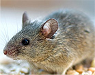
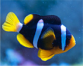

Useful To Know

The scientific name Felis catus was proposed by Carl
Linnaeus in 1758 for a domestic cat. Felis catus domesticus was
proposed by Johann Christian Polycarp Erxleben in 1777.
Felis daemon proposed by Konstantin Satunin in 1904 was a black cat from the Transcaucasus, later identified
as a
domestic cat.

The dog is a domesticated descendant of the wolf. Also called the domestic dog, it is derived from extinct
gray wolve
Dogs are mammals, usually kept as pets or for work on farms or police. Some dogs are trained to be rescue
dogs, and join
teams such as mountain rescue.

Rodents are mammals of the order Rodentia which are characterized by a single pair of continuously growing
incisors in
each of the upper and lower jaws.
The order Rodentia includes nearly all of the species of small mammals used in neuroscience, including mice,
rats,
hamsters, gerbils, and guinea pigs.

Birds are a group of warm-blooded vertebrates constituting the class Aves characterised by feathers,
toothless beaked
jaws.
Birds are vertebrate animals adapted for flight. Many can also run, jump, swim, and dive. Some, like penguins,
have lost
the ability to fly but retained

fish ( pl. : fish or fishes) is an aquatic, gill-bearing vertebrate animal with swimming fins and a hard
skull, but
lacking limbs with digits..
Fin fish like salmon have gills, are covered in scales, and reproduce by laying eggs. Eels, by contrast, have
worm-like
bodies and exceedingly slimy skin.

Reptiles may require less daily care and exercise than many other pets, but they require special skills and
careful
attention to diet, handling and habitat
13:06
Reptiles can make great pets, but that doesn't mean that they are the most entertaining of creatures